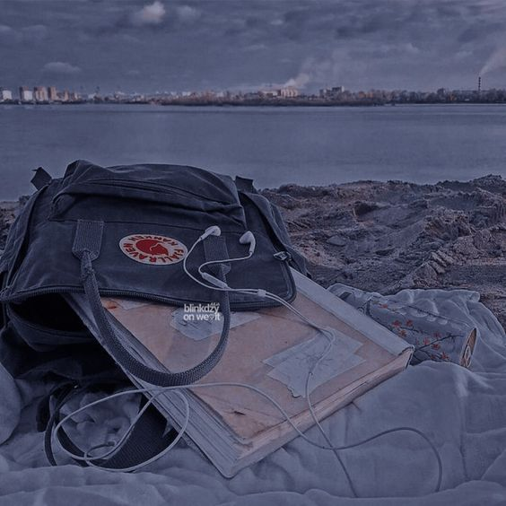
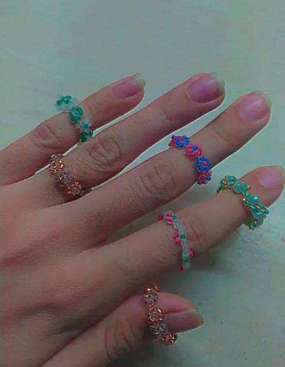

- 10-11 лет занималась музыкой, закончила музыкальную школу и последние года 3-4 играла в оркестре. Пыталась научиться играть на гитаре и укулеле:')
- Немного рисую, люблю просто послушать музыку, читать книги и смотреть смотреть фильмы/сериалы.

- Когда-то еще плела из бисера разные украшения.
